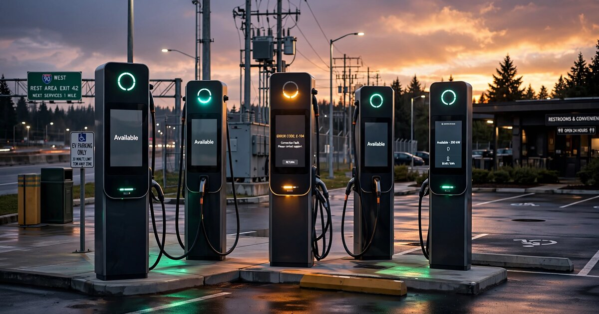

EV Charger Uptime Compliance SaaS for NEVI-Funded Station Operators
The Bipartisan Infrastructure Law allocated $7.5 billion for public EV charging stations under the National Electric Vehicle Infrastructure (NEVI) Formula Program, with a hard federal mandate: every charging port must maintain 97% uptime over a rolling twelve-month window or risk losing its funding. As of April 2026, the United States has 71,398 public DC fast charging ports across 15,121 sites, with more than 1,000 new stalls added every month. Operators self-report uptime of 98.7%, but independent measurement by ChargerHelp, analyzing 19 million data points, found actual uptime at 73.7%. The software that bridges this 25-point credibility gap by independently calculating, documenting, and defending NEVI-compliant uptime across multi-vendor charger fleets does not exist as a standalone product.

The Problem
Pull into any highway rest stop with an EV and you have roughly a one-in-five chance of not being able to charge. One in five. J.D. Power reported in Q4 2024 that 20% of EV drivers were unable to complete a charge at public stations due to outages, hardware malfunctions, or payment system failures. Broken retractor systems, dead payment screens, bent connector pins, cut charging cables (vandals selling the copper), and firmware glitches that prevent the vehicle-charger handshake from completing: the failure modes are diverse and the cumulative effect is corrosive. Drivers who can't charge lose trust, and that trust deficit slows EV adoption, which in turn undermines the entire climate rationale for spending $7.5 billion of public money on charging infrastructure.
Congress understood this when it wrote the NEVI program into the Bipartisan Infrastructure Law, and the resulting FHWA Final Rule (23 CFR Part 680) sets minimum standards that any federally funded charging station must meet: at least four DC fast charging ports, each delivering 150 kW simultaneously, contactless payment, and crucially, a rolling twelve-month average uptime of 97% per port. Uptime is calculated monthly using a specific formula: m = ((525,600 - (T_outage - T_excluded)) / 525,600) × 100, where 525,600 is the number of minutes in a year. Operators must report quarterly via the federal EV-ChART system, and noncompliance triggers funding clawbacks over a five-year operations period.
The rule is clear and the enforcement mechanism exists, but what doesn't exist is a reliable way for most operators to actually calculate, document, and prove their compliance, because the data infrastructure underneath public EV charging is a fragmented mess that makes accurate uptime measurement surprisingly difficult.
Why the Data Infrastructure Is Broken
A typical NEVI-funded charging site has four to eight DC fast charging ports, possibly from two different hardware vendors (say, ABB and Tritium), managed through a Charge Point Management System (CPMS) like ChargePoint's platform, Greenlots (now Shell Recharge Solutions), or AmpUp. Each charger communicates with the CPMS via the Open Charge Point Protocol (OCPP), either version 1.6 or 2.0.1. In theory, OCPP provides standardized status messages: Available, Preparing, Charging, SuspendedEV, SuspendedEVSE, Finishing, Faulted, Unavailable. In practice, the implementation varies so wildly between hardware vendors that the same physical condition (a charger with a broken payment screen that can still dispense electricity if the driver calls the helpline for a remote start) might be reported as "Available" by one vendor's firmware and "Faulted" by another's.
The UC Davis EV Research Center study on 98 chargers spanning six years found persistent "zombie chargers" that reported as online but hadn't successfully completed a session in months, along with high-frequency network instability (chargers cycling between "Available" and "Unreachable" dozens of times per day) that standard annual uptime reporting completely missed. The study's authors proposed three new metrics (Fault Time, Fault-Reason Time, and Unreachable Time) specifically because NEVI's own uptime formula is too coarse to help operators diagnose and fix problems.
This creates a two-sided failure in which operators who self-report uptime based on raw OCPP status messages overstate their performance because they count "Available" at face value without verifying actual chargeability. That's how you get the 98.7% self-reported figure. Meanwhile, the actual driver experience, measured by ChargerHelp's 2025 Reliability Report analyzing 100,000 sessions across 2,400 chargers, shows a first-time charge success rate of only 71%. The gap between "the charger says it's working" and "a driver can actually get electricity" is where $7.5 billion in federal funding accountability falls into a hole.
The Gap in the Market
Software for managing EV chargers exists. Software for proving NEVI compliance in a way that would survive a federal audit does not, at least not as a standalone product accessible to the long tail of operators who aren't running ChargePoint's enterprise platform.
| Company | What They Do | What's Missing |
|---|---|---|
| ChargePoint Platform | Unified CPMS with AI-driven analytics, proactive monitoring, load balancing, dynamic pricing. Supports OCPP-compliant hardware. Dominant market position. Cloud-native with enterprise dashboards. | Proprietary ecosystem designed for ChargePoint hardware and large operators. Reports uptime from ChargePoint's own perspective, not from the NEVI formula's perspective with independent verification. An operator running ChargePoint, ABB, and Tritium hardware across three NEVI sites can't get a unified compliance view. |
| AmpUp EV Cloud | Charging management for site hosts with real-time monitoring, smart load management, and remote troubleshooting via OCPP, targeting the mid-market segment of commercial properties, fleets, and retail locations. | An operational tool rather than a compliance tool, which provides session data and alerts but doesn't calculate NEVI uptime per the federal formula, track excluded time categories (utility outages, force majeure), generate quarterly EV-ChART submissions, or maintain an audit trail for disputed outage classifications. |
| ChargerHelp (EMPWR) | O&M management platform providing remote diagnostics, field service dispatch, and maintenance tracking, recently integrated with Epic Charging's CPMS, having pioneered the independent reliability measurement methodology that exposed the industry's uptime gap. | Focused on field service and diagnostics rather than regulatory compliance: measures reliability better than anyone, but operates on the maintenance side rather than the reporting side, and doesn't generate NEVI-formatted reports, calculate rolling 12-month uptime per port, or manage the documentation workflow for disputed outage exclusions. |
| Ampcontrol | OCPP software for charging optimization with dynamic load management, energy cost reduction, and fleet solutions, built around an API-first integration model. | An energy optimization platform rather than a compliance reporting tool: no uptime calculation, no regulatory reporting, no audit trail, solving the wrong problem entirely for operators whose primary anxiety is NEVI compliance. |
The pattern: every existing platform serves either the operational layer (keep chargers running) or the energy layer (optimize costs and load). Nobody serves the regulatory compliance layer that sits between operations and the federal government: calculating uptime per the NEVI formula, classifying outage minutes into the correct categories (operator fault vs. utility interruption vs. vehicle-caused vs. force majeure), generating quarterly EV-ChART submissions, and maintaining the audit trail that proves an operator's 97% claim when FHWA comes asking.
This gap matters because NEVI funding comes with a five-year operations obligation. An operator who received $1 million in federal cost-share for a four-port charging station must maintain 97% uptime per port for five years. If they can't prove compliance, they face clawbacks, and the financial exposure per station ranges from $200,000 to $1 million, which is a compliance risk worth paying to manage.
The Solution
A compliance-layer SaaS that sits between the operator's existing CPMS (or directly on their OCPP data stream) and the federal reporting requirement:
1. Multi-vendor OCPP ingestion engine: Connect to any OCPP 1.6 or 2.0.1 backend via API or direct WebSocket. Normalize status messages across hardware vendors into a consistent chargeability taxonomy. When an ABB charger reports "Available" but hasn't completed a session in 72 hours, flag it as a zombie and exclude it from uptime until a live session confirms actual function. When a Tritium charger reports "Faulted" for a payment terminal issue but the port can still dispense electricity via remote start, classify it accurately per the NEVI formula's definition of "up" (hardware and software both online and available for use, or in use, and successfully dispensing electricity). The normalization engine, which maps each vendor's idiosyncratic OCPP status reporting behavior to a canonical chargeability taxonomy that matches the NEVI definition of "up," is the core intellectual property and the single hardest engineering problem in the entire product.
2. NEVI uptime calculator: Per-port, per-month, rolling twelve-month calculation using the exact FHWA formula. Real-time dashboard showing current uptime percentage with projections: "Port 3 is at 96.2% and trending down. At the current fault rate, it will breach 97% in 11 days." Automated alerts when a port's trajectory threatens compliance. The calculator distinguishes between T_outage (operator's problem) and T_excluded (utility service interruptions, internet provider outages, vehicle-caused faults with documentation) because the excluded-time provisions in the NEVI rule are the operator's primary defense against unfair compliance failures, but they require documentation that most operators don't maintain.
3. Outage classification and evidence engine: When a charger goes down, the platform captures the OCPP fault code, timestamps, network connectivity status, and utility grid status (integrated with local utility outage APIs where available). It presents the operator with a classification workflow: was this a hardware fault (T_outage), a utility interruption (T_excluded), a network provider outage (T_excluded), or a vehicle-caused issue (T_excluded with documentation)? Each classification is timestamped, attributed to a user, and stored with supporting evidence. This audit trail is the compliance armor. When FHWA questions why Port 2 shows 847 minutes of excluded time in March, the operator can produce the utility's outage notification, the ISP's service ticket, and the charger's OCPP log showing the precise transition from Available to Unavailable and back, all in a single exportable compliance package.
4. Quarterly EV-ChART report generator: Pre-filled quarterly reports in the format required by the federal EV-ChART system, covering pricing, real-time availability, session data, energy dispensed, and uptime metrics. The operator reviews, approves, and submits, and what currently takes a site manager four to six hours of spreadsheet wrestling per quarter, pulling data from the CPMS, calculating uptime per the formula, reconciling excluded time, formatting for submission, and praying the numbers add up correctly, becomes a fifteen-minute review-and-approve workflow that generates audit-ready documentation as a byproduct of normal operations.
5. Portfolio compliance dashboard: For operators managing multiple NEVI-funded sites (the Sheetz and Wawa and Pilot Flying J deployments receiving millions in NEVI grants across dozens of locations), a portfolio-level view showing compliance status across all sites, with drill-down to individual ports. Red/yellow/green status indicators. Compliance risk scoring. Automated escalation when a site trends toward noncompliance. Comparative analytics: which hardware vendors have the lowest fault rates, which sites have the most excluded time, which maintenance providers resolve tickets fastest.
The Original Calculation: What NEVI Noncompliance Actually Costs
Nobody in this market has published a clear calculation of the financial exposure per port from NEVI noncompliance. So here it is.
NEVI covers up to 80% of eligible project costs, which means a typical four-port DC fast charging station costing $600,000 to $1,000,000 installed (the Michigan program reported an average of $163,500 per port) receives a NEVI contribution ranging from $480,000 to $800,000 per station in federal dollars that come with strings attached for five full years. If an operator fails to maintain 97% uptime across that period, the clawback exposure is the full federal share.
Now consider the math of 97% uptime in concrete terms. In a year of 525,600 minutes, 3% downtime is 15,768 minutes, or about 10.9 days. If an operator's charger is down for a cumulative total of more than 10.9 days across the year, and they can't document enough excluded time to bring the net outage below that threshold, they breach compliance on that port.
A compliance SaaS at $200/site/month ($2,400/year) that prevents a single clawback event ($480,000-$800,000) delivers an ROI of 200x to 333x. Even if the probability of a clawback enforcement action in any given year is only 5%, the expected value of avoided loss is $24,000 to $40,000 per site per year against a $2,400 annual subscription cost. The math is not close.
But the compliance cost isn't just clawbacks. Pennsylvania's 30 NEVI stations have already supported 80,000+ charging sessions. As utilization grows, a port that drops below 97% uptime doesn't just risk federal funding; it loses revenue. At 16.1% average utilization (the national average for DC fast chargers) and $0.40/kWh pricing on a 150 kW port, each hour of downtime beyond the 3% allowance costs approximately $9.66 in lost revenue. Over a year, 1% additional downtime (5,256 minutes) costs approximately $849 in revenue per port. Across a 20-site portfolio of four-port stations, that's $67,920 in avoidable annual revenue loss, which alone covers the subscription cost for the compliance platform with margin to spare.
Revenue Model
| Revenue Stream | Amount | Notes |
|---|---|---|
| Site compliance subscription (monthly) | $149-299 | Per NEVI-funded site. Includes OCPP ingestion, uptime calculation, outage classification, quarterly report generation. Tiered by port count (4-port vs. 8-port vs. 12+ port sites). |
| Portfolio tier (monthly) | $999-2,499 | For operators with 10+ sites. Portfolio dashboard, cross-site analytics, bulk report generation, dedicated compliance manager. Volume discount on per-site pricing applies at scale. |
| Audit defense package (per event) | $2,500-5,000 | When FHWA or a state DOT initiates a compliance review, the platform generates a comprehensive audit package with full documentation, evidence chain, and compliance narrative. High-margin, low-frequency. |
| State compliance add-on (monthly) | $49-99 | California's CEC uptime standards (also 97%, different calculation, six-year reporting), plus emerging state-level requirements. Each state's formula and reporting format is a configuration, not a new product. |
| API access for CPMS vendors (annual) | $25,000-100,000 | White-label compliance calculation engine for CPMS platforms that want to offer NEVI compliance as a feature without building it. Recurring license, priced per managed port. |
Unit economics on a 20-site operator: 20 sites at $199/month average = $47,760/year. Operator's NEVI exposure across 20 sites: $9.6M to $16M in federal cost-share. Compliance platform cost as a percentage of protected federal investment: 0.3% to 0.5%. Customer acquisition cost: $3,000-5,000 (the buyer is the operations director who already attends EV infrastructure conferences and reads industry newsletters). LTV at 36-month average retention reaches $143,280, yielding an LTV:CAC ratio between 28x and 47x.
Market Size
TAM: The NEVI program allocates $5 billion across all 50 states, D.C., and Puerto Rico through FY2026, with an additional $2.5 billion in Charging and Fueling Infrastructure (CFI) competitive grants. As of early 2026, approximately 849 NEVI charging stations have been conditionally awarded nationally, with construction underway or completed in states like Pennsylvania (30 built, 53 in progress), Michigan (83 planned), Arizona (up to 69), Oregon (40 in Round 2 alone), and Texas (70+). Each station must maintain compliance for five years, which means at an eventual buildout of 3,000 to 5,000 NEVI-funded stations (conservative, based on current state plans and funding allocation), the NEVI compliance SaaS market at $200/site/month is worth $7.2M-12M/year for federal compliance alone. Adding CFI-funded stations, state-funded programs (California's CEC-mandated stations, New York's $13M repair program), and privately funded stations that voluntarily adopt compliance monitoring for commercial credibility: $30-50M/year total addressable market for compliance-layer SaaS.
SAM: The 849 conditionally awarded NEVI stations represent the immediate serviceable market. As these stations come online over 2025-2027, each enters a five-year compliance window. Adding the approximately 7,500 ports funded through the $623M CFI grant announcement and similar state programs: roughly 1,200-2,000 stations in the serviceable window by end of 2027. At $200/month: $2.9M-4.8M/year.
SOM (year 3): 200 station subscriptions at $199/month average = $477,600. Ten portfolio-tier customers at $1,499/month = $179,880. State compliance add-ons: $60,000. Audit defense and API licensing: $100,000. Total: approximately $817,000 ARR. That's 10-15% penetration of stations operational by year 3, which is aggressive but achievable given the concentrated buyer base (most NEVI stations are operated by fewer than 50 companies nationally).
Why Now
NEVI stations are entering their compliance windows. Pennsylvania opened its first NEVI station in December 2023. Ohio and New York followed in 2024. By mid-2026, hundreds of stations are operational or nearing completion. Each one starts a five-year compliance clock the day it begins serving drivers. The compliance problem is not theoretical; it is accruing obligations in real time, and every month of operation without proper uptime tracking is a month of unauditable compliance risk.
The uptime measurement gap is now public knowledge. ChargerHelp's 2024 and 2025 Annual Reliability Reports, the UC Davis study on zombie chargers, and media coverage of the 25-point gap between self-reported and actual uptime have made the credibility problem impossible to ignore. AFDC data shows approximately 12,000 of 212,000 public chargers are inoperable at any given time. State regulators in California are proposing penalties for excessive downtime. The regulatory environment is tightening, not loosening.
The operator base is fragmenting. NEVI grants are going not just to large networks (ChargePoint, EVgo, Electrify America) but to convenience store chains (Sheetz, Wawa, Pilot Flying J, Love's), fuel retailers, municipalities, and small independent operators. These entities have expertise in real estate, retail, or municipal services, not in federal infrastructure compliance. A Sheetz franchise operator who just received $800,000 in NEVI funds to install four DC fast chargers does not have a compliance team. They need software that makes the reporting requirement manageable.
Political uncertainty increases compliance risk. The Trump administration froze portions of EV charging grants in early 2025 before legal challenges unlocked $5 billion. An adversarial federal posture toward EV infrastructure means compliance enforcement, when it comes, may be aggressive rather than collegial. Operators who can demonstrate meticulous compliance documentation are better positioned than those relying on self-reported CPMS data that hasn't been verified against the federal formula.
Startup Costs
| Category | Cost | Notes |
|---|---|---|
| Platform engineering (12 months) | $380K | 2 backend + 1 frontend + 1 data engineer. OCPP ingestion layer (WebSocket + REST), normalization engine for ABB/Tritium/BTC Power/Eaton hardware, NEVI formula calculator, outage classification workflow, report generator. The OCPP normalization work is the hardest engineering: each hardware vendor's OCPP implementation has quirks that affect status reporting accuracy. |
| OCPP hardware test lab | $60K | Purchase or lease one unit each from ABB (Terra), Tritium (RTM), BTC Power (Gen 4), and Eaton to validate OCPP status message behavior under controlled fault conditions. This is the moat: a compliance platform that hasn't tested against real hardware is guessing about status normalization. |
| Regulatory research and formula validation | $35K | Contract compliance researcher to map the NEVI uptime formula, EV-ChART submission format, state-level variations (California CEC, New York, Colorado), and document the excluded-time provisions and their documentation requirements. Legal review of clawback provisions. |
| Pilot program (10 stations, 6 months) | $25K | Free platform access for pilot operators. Dedicated onboarding. Goal: validate OCPP ingestion across at least 3 hardware vendors and demonstrate accurate uptime calculation against operator's own CPMS data. |
| Sales and conference presence (year 1) | $40K | EV Charging Summit, Advanced Clean Transportation Expo (ACT), NACS Show (for convenience store operators), state DOT EV infrastructure workshops. Targeted presence at the events where NEVI grant recipients gather. |
| Security and compliance (SOC 2 Type 1) | $25K | Government-adjacent customers require security audits. SOC 2 Type 1 in year 1, Type 2 by year 2. |
| Cloud infrastructure and operating buffer (12 months) | $35K | AWS or GCP. Time-series database for OCPP status streams (InfluxDB or TimescaleDB). Customer support. Legal. |
| Total | $600K |
Limitations
The 25-point gap between self-reported uptime (98.7%) and actual driver experience (73.7%) comes from two different data sources with different methodologies. ChargerHelp's actual uptime figure is derived from its O&M field data and the Paren third-party dataset, not from a nationally representative sample. The self-reported 98.7% comes from network operators reporting into their own CPMS platforms. Both figures are directionally informative but neither constitutes a rigorous national measurement with controlled methodology. The true gap is real, as every EV driver who's encountered a broken charger can attest, but its precise magnitude is uncertain.
The NEVI clawback mechanism has not yet been tested. No operator has had funding revoked for uptime noncompliance as of June 2026, because most stations are still within their first year of operations and the enforcement posture of the current administration is unclear. The compliance SaaS thesis depends on operators treating the clawback risk as real. If FHWA never enforces, the urgency diminishes. That said, state-level enforcement (California's proposed downtime penalties) may provide independent regulatory pressure even if federal enforcement is lax.
The TAM projection of 3,000-5,000 NEVI-funded stations is extrapolated from current state plans and funding allocation, not from a completed buildout. Deployment has been slower than projected: nationally, only around 40 NEVI stations were operational as of early 2025 from the initial 849 awarded. Construction delays, permitting bottlenecks, utility interconnection timelines, and political uncertainty could compress the eventual buildout below projections. However, the $5 billion in NEVI formula funds has been apportioned to states through FY2026, and the five-year operations obligation means even a smaller buildout creates a sustained compliance market through 2031-2032.
OCPP normalization across hardware vendors is presented as intellectual property, but it could also be a persistent engineering burden. Each firmware update from ABB, Tritium, or BTC Power can change status reporting behavior, requiring ongoing validation. This is a maintenance cost, not a one-time investment, and it scales with the number of supported hardware vendors.
Strongest Counterargument
ChargePoint already operates the dominant CPMS platform, recently launched its next-generation ChargePoint Platform with AI-driven analytics and OCPP support for third-party hardware, and has every technical capability needed to add NEVI compliance reporting as a feature. For operators already on ChargePoint's platform, a standalone compliance SaaS is redundant: ChargePoint can calculate uptime, generate reports, and manage compliance within its existing dashboard. ChargePoint has the engineering resources, the OCPP expertise, and the customer relationships. If NEVI compliance becomes a meaningful pain point for operators, ChargePoint (and secondarily EVgo, Electrify America, and Shell Recharge) will build the compliance features into their existing platforms within two product cycles.
The counterpoint is structural. A CPMS vendor calculating its own uptime is like a student grading their own exam. The CPMS reports uptime based on the status data it receives from chargers, but the CPMS itself may be the source of connectivity issues (the UC Davis study found that "Unreachable Time," where the charger loses contact with the management system, is a significant and underreported category of downtime). An independent compliance layer that ingests raw OCPP data and also monitors the CPMS connection itself can detect failure modes that the CPMS is structurally blind to. Furthermore, the multi-vendor problem is real: a Wawa operating ChargePoint hardware at five locations and ABB hardware at three others cannot get a unified compliance view from either vendor's platform. The standalone compliance tool serves precisely this cross-platform need. Finally, CPMS vendors have a financial disincentive to report low uptime, because their platform's reliability metrics are a competitive selling point. An independent compliance platform aligns its incentives with the operator's (accurate reporting to avoid clawbacks) rather than with the CPMS vendor's (flattering metrics to retain customers).
What You Can Do
If you operate NEVI-funded charging stations: Start by pulling your OCPP status logs for the last 90 days and calculating uptime per the NEVI formula, not your CPMS's built-in uptime metric. The NEVI formula counts minutes, includes specific excluded-time categories, and uses a rolling twelve-month window. If your CPMS reports 99% uptime but the NEVI formula calculation shows 95%, you have a documentation gap that needs closing before your first quarterly EV-ChART submission. At minimum, create a spreadsheet tracking every outage event, its duration, its cause, and its classification (T_outage vs. T_excluded), with supporting documentation for every excluded-time claim. If that sounds like a lot of work, that's the point; this is the manual process the SaaS replaces.
If you're a state DOT administering NEVI funds: Ask your grant recipients how they're calculating uptime. If the answer is "our charging network tells us we're at 98%," probe deeper. Request that they demonstrate the calculation methodology, the outage classification process, and the documentation trail. States that establish clear compliance expectations early will have fewer enforcement headaches later. Consider whether standardized compliance reporting tools should be a recommended (or required) component of NEVI grant applications for future rounds.
If you're a builder evaluating this space: The entry point is the OCPP normalization engine. Acquire one ABB Terra and one Tritium RTM unit (used units from decommissioned sites are available for under $10,000 each) and spend two months understanding how each reports status under every fault condition. The differences are the product's foundation. Pilot with three operators across at least two hardware vendors in a single state; Pennsylvania (30 built stations, most advanced NEVI program) is the ideal starting market. The compliance form library for each state's reporting variations is a slow-burning moat that no competitor will rush to replicate.
The Bottom Line
The United States is building a public EV charging network with federal money and federal reliability standards, managed by a fragmented ecosystem of hardware vendors, software platforms, convenience store operators, and municipalities, none of whom have ever operated under a federally mandated uptime regime with clawback enforcement. Pennsylvania has built 30 stations. Michigan is planning 83. Texas is constructing 70. Every one of them must prove 97% uptime per port for five years, and right now most of them are calculating that number by trusting a CPMS metric that ChargerHelp's data suggests overstates reality by 25 points. The software that independently calculates NEVI-compliant uptime, classifies outage minutes, manages excluded-time documentation, and generates audit-ready quarterly reports is not a nice-to-have for these operators. It is the difference between keeping $480,000 to $800,000 in federal funding per station and giving it back. At $200 a month, the compliance platform costs less than half a day of charger downtime in lost revenue, and it protects against a clawback exposure that is two to three orders of magnitude larger. Not glamorous, not revolutionary: just a regulatory compliance gap between a $7.5 billion federal program and the operators who received the money, waiting for someone to build the bridge.